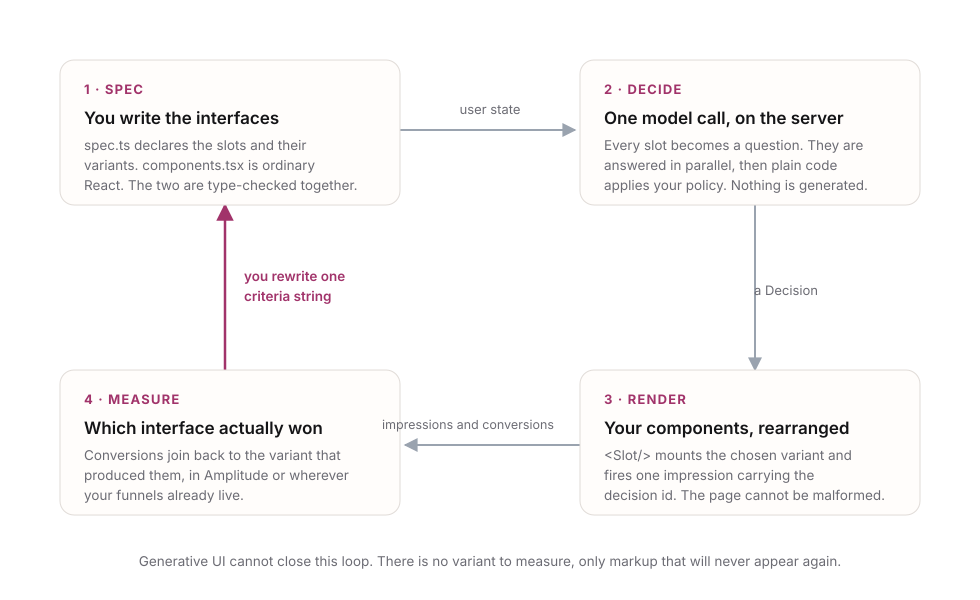
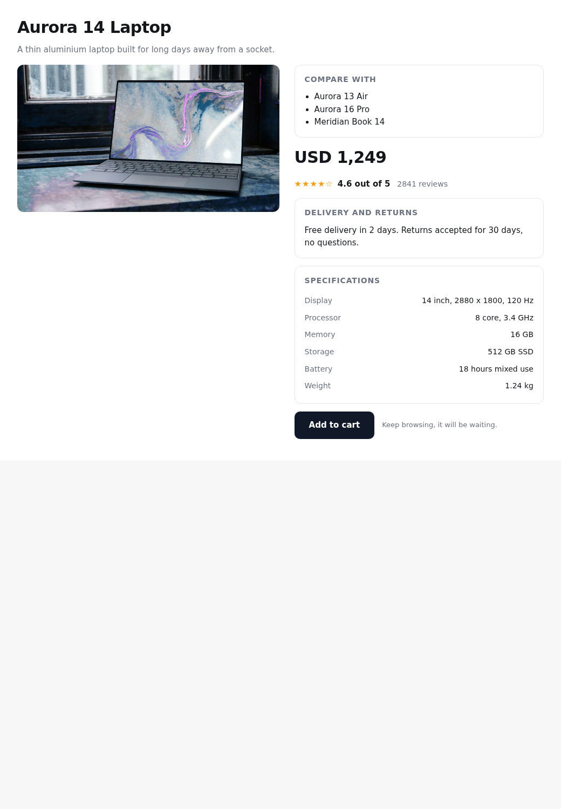
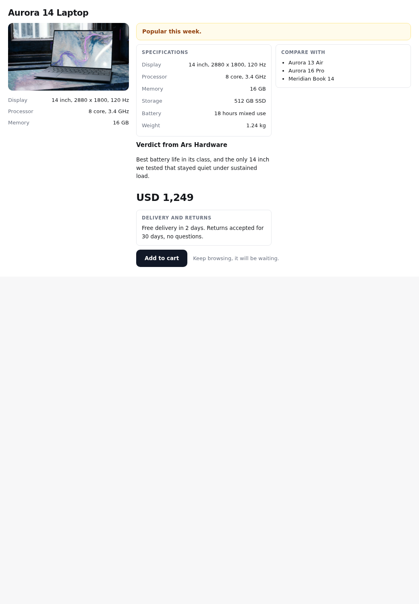
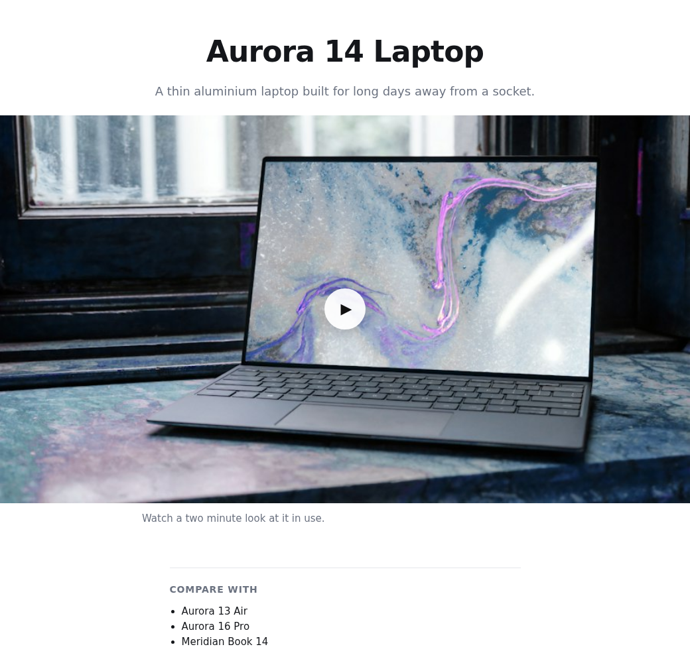
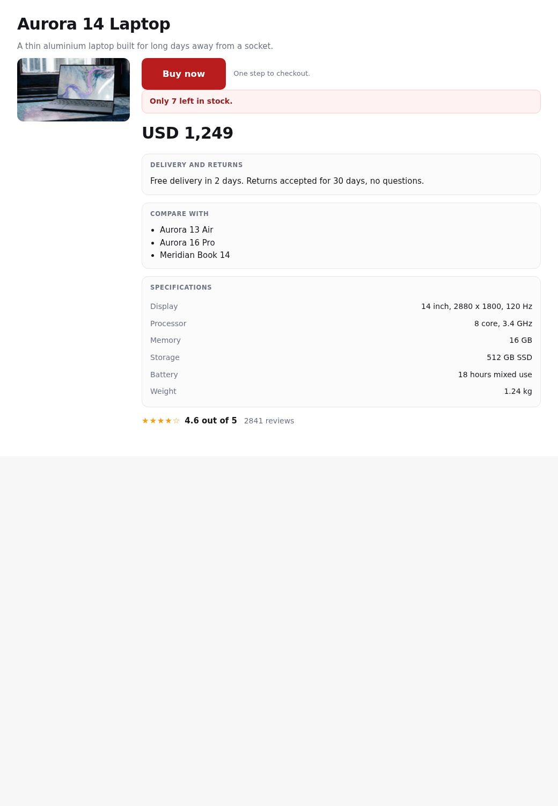

The idea
The model writes the interface
Seconds per page. Output has to be validated before it can be rendered. Every response is different, so there is nothing to compare and nothing to learn from.
The model picks from what you built
One round trip. Cannot produce an interface that does not exist. Every choice has a name, so you can ask which name converted better.
That last sentence is the whole argument. A generative interface cannot be A/B tested even in principle, because the thing it produced will never be produced again. A decided interface is just a variant with an id, which every analytics tool you already use knows how to count.
The loop

What you write
- Define the spec. Slots, their variants, and a plain-English criterion for each variant. The criterion is both the documentation and the question the model is asked.
- Write the components. Ordinary React. One per variant. Nothing in them knows a model exists.
- Write the assembler, or skip it. Policy: confidence floors, caps, ordering, fallbacks. A working default ships, so most people never write this.
- Wire the decider. One line in a route handler. The key stays on the server.
- Read the results. Impressions and conversions land in Amplitude joined by a decision id.
The spec is TypeScript, and that is the point
export const spec = defineSpec({
hero: variant(Hero, {
question: "Which opening treatment fits this shopper?",
default: "bigImage",
options: {
bigImage: "Judges by look and brand feel, reads little detail",
specTable: "Opens with numbers and compares models on specifications",
},
}),
financing: presence({
question: "Should a monthly instalment option be offered?",
default: false,
}),
panels: rank(["price", "proof", "specs", "shipping"], {
question: "How central is each of these to this shopper's decision?",
}),
})The keys of options are constrained to Hero’s own variant union. Rename a variant and the spec stops compiling. Delete a component and you find out at build time, not when a user hits the page.
Four primitives, and that is the whole vocabulary
| Primitive | The question it asks | Returns |
|---|---|---|
variant() | which version of this component | one option, with a distribution |
presence() | should this appear at all | a probability |
rank() | what order should these go in | a score per item |
intensity() | how strongly, along a described scale | a position on the scale |
Page layout is not a fifth primitive. It is a variant() whose chosen value becomes a class name rather than a component, which is exactly how the four layouts below work.
The prototype, which exists
A working Python prototype assembles a product page from pre-built fragments. One batched call answers twelve questions about a shopper in parallel, then deterministic code picks the layout, the variants, what to hide, and what order to put things in. These four pages are the same product and the same components, decided differently. No branch was written for any of them.




Measured, not claimed
Two live calls came back at 724 ms and 468 ms for an uncached shopper. The prototype’s own target was under 300 ms and it misses that, by 2.4x and 1.6x. Assembly and rendering are hundredths of a millisecond; effectively all of it is the network round trip. A cached shopper costs nothing.
That is slower than hoped and still a different category from generating a component tree token by token, which costs seconds and yields nothing you can measure afterwards.
Measurement contract
Every decision carries a decisionId and a hash of the spec version. Each rendered variant fires exactly one impression, on mount, never on re-render. Conversions you report are stamped with the active decision id, so they join back to the variants that produced them.
interface Tracker {
impression(e: {
decisionId: string
specVersion: string
slot: string
variant: string
confidence: number
gated: boolean // true when the model was not trusted
}): void
conversion(e: { decisionId: string; event: string; props?: object }): void
}An Amplitude adapter ships first. The interface is four lines, so PostHog, Mixpanel or an internal pipe are a short afternoon.
Packages
| Package | What it is |
|---|---|
@decided-ui/core | primitives, question compiler, answer types, default assembler. Pure and isomorphic, no React, no server. |
@decided-ui/react | <Provider>, <Slot>, useDecision(), impression firing. |
@decided-ui/next | route handler and server action for the App Router. Express and Remix follow. |
@decided-ui/amplitude | adapter over the Tracker interface. |
Phases
P0 Prototypedone
Python, server rendered. Four layouts, twelve questions, one call. Proved the loop above the measurement stage, and produced the numbers on this page.
P1 core and reactnext
The four primitives, the question compiler, the default assembler, and the React renderer. Driven by a mock decider, so it runs with no key and no network and is fully testable.
P2 the server adapterplanned
Next.js route handler, real decisions, key handling, caching.
P3 measurementplanned
The Tracker interface, the Amplitude adapter, and the impression-once discipline that makes the numbers trustworthy.
P4 the example and the docsplanned
The storefront above, ported to React as a real example. This page becomes the documentation.
What this is not
It is not an experimentation platform. It emits events and leaves assignment, storage and reporting to the tool you already pay for. It is not a component library; you write the components. It is not a way to avoid design work; someone still has to build every variant, and writing criteria that genuinely discriminate is the real labour. In the prototype, two slots barely move because their criteria are too vague, which is exactly the failure mode to expect.